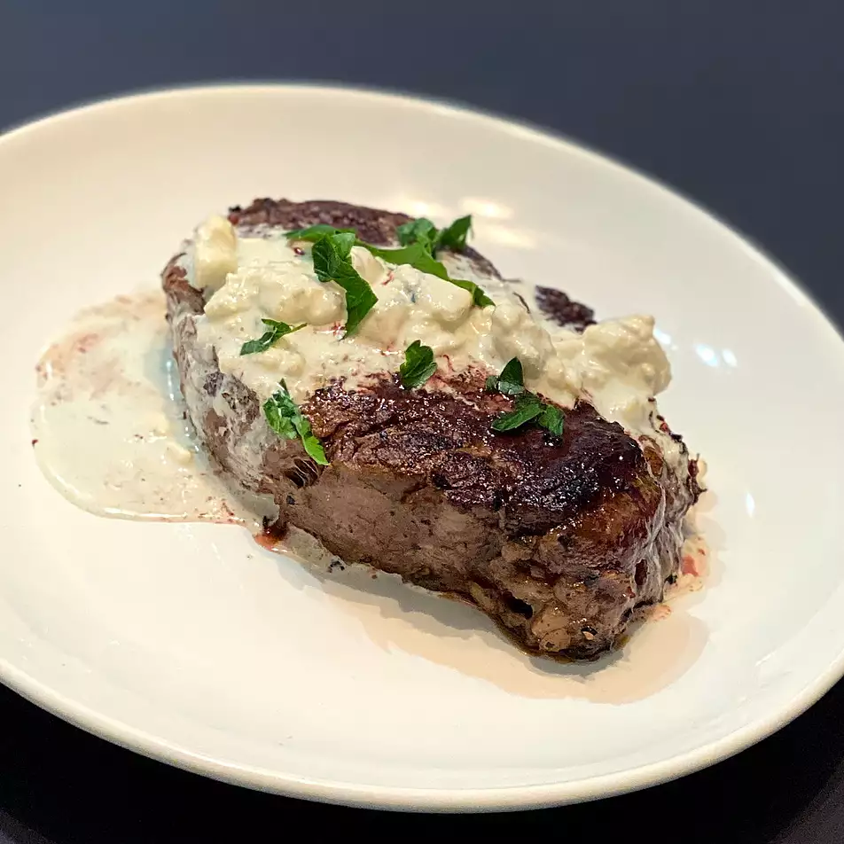

Filet Mignon for Two

Description
Filet mignon with Gorgonzola sauce is a very simple and delicious meal for two. A good sear on your steak will ensure a juicy, tender steak. I have found this to be the best way to cook a steak indoors.
Ingredients
- 2 (6 ounce) filet mignon steaks
- 1 teaspoon olive oil
- salt and ground black pepper to taste
- Gorgonzola Sauce
Steps
- Preheat the oven to 500 degrees F (260 degrees C). Place a large, oven-proof skillet in the oven as it preheats.
- Bring steaks to room temperature. Rub with olive oil and season generously with salt and pepper.
- Remove the hot skillet from the oven carefully and place it on a burner set to high heat. Leave the oven on.
- Place steaks into the dry pan immediately and sear, turning with tongs, 1 to 2 minutes on both sides.
- Transfer the pan back into the preheated oven and cook until desired doneness is reached, 3 to 5 minutes.
- For medium doneness, an instant-read thermometer inserted into the centers should read 140 degrees F (60 degrees C).
- Transfer steaks to a warm platter and tent loosely with foil. Let rest for 5 to 10 minutes; the steaks will continue to cook during this process and the internal temperature will rise 5 to 10 degrees. Serve sauce with steaks.